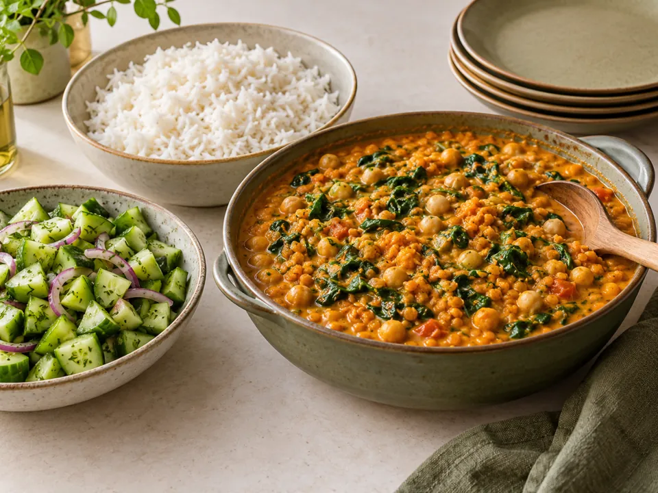
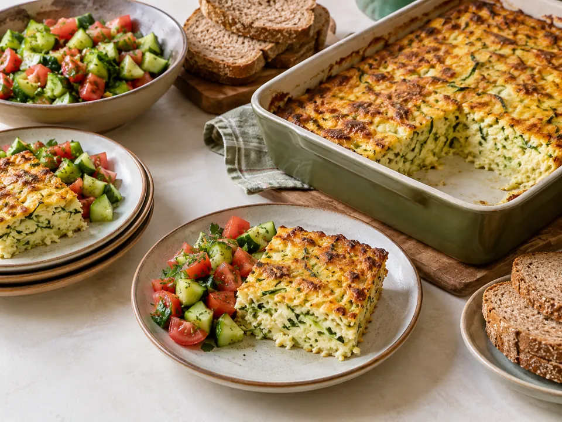

טבעוניקארי עדשים, חומוס וקוקוס
תבשיל כתום עם תרד, אורז וסלט מלפפונים
₪8.2–10.2לסועד · אומדן לכמויות במתכון
למתכון המלא ←פרוסה זהובה לצד סלט ולחם מלא
5 סועדים: כ־₪9.2 לאדם · 4 סועדים: כ־₪11.5 לאדם
אומדן לעלות הכמויות במתכון, כולל שמן ותבלינים. איך חושב המחיר?
מחממים תנור ל־190 מעלות. מגררים קישואים ותפוחי אדמה, משהים במסננת 5 דקות וסוחטים היטב במגבת נקייה.
קוצצים בצל ומטגנים בכף שמן עד לריכוך. מצננים מעט ומערבבים עם הירקות הסחוטים, הקוטג׳, הגבינה המפוררת, הביצים ושיבולת השועל. מתבלים במעט מלח ובפלפל.
משמנים קלות תבנית של כ־22×30 ס״מ, מעבירים את התערובת ואופים 40–50 דקות, עד שהמאפה יציב גם במרכז וזהוב. ממתינים 10 דקות לפני החיתוך.
קוצצים את ירקות הסלט ומתבלים בלימון, יתרת השמן ומלח. מחלקים ל־4–5 פרוסות גדולות ומגישים עם סלט ולחם מלא.
קוטג׳ וקצת גבינה מלוחה נותנים טעם בלי להעמיס גבינות יקרות. תפוחי האדמה ושיבולת השועל מוסיפים נפח ומרקם.
ביצים וגבינות, ירקות, תפוחי אדמה ולחם מלא.
אלרגנים מרכזיים במתכון: חלב · ביצים · גלוטן. יש לבדוק גם את תוויות המוצרים, התחליפים והתבלינים.
במתכונים עם חומוס ושעועית משתמשים בקטניות שכבר בושלו, לא בקטניות יבשות ללא בישול. זמני ההכנה אינם כוללים הפשרה או בישול מוקדם שלהן.